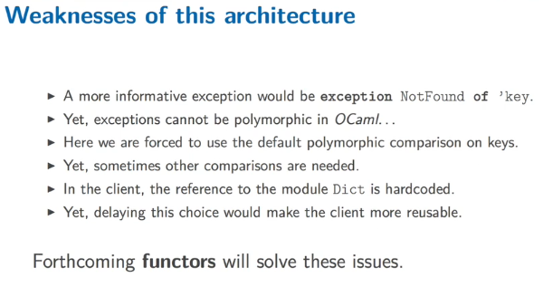

this week: programming-in-the-large using the module system of OCaml.
1. STRUCTURING SOFTWARE WITH MODULES
in large project: mangage high number of definitions → abstractions built on top of other abstractions.
- layers of abstractions: hide information
- divide program into components
- identifiers organised to avoid naming conflicts
module as namespace
dot-notation: access module component.
ex. List.length
or first open List then just call length
if open 2 modules having identical identifiers, the last opened module will be used.
to define a module:
module SomeModuleIdentifier = struct
(* a seq of definitions *)
end
- module name: start with an upper case
- to alias a module:
module SomeModuleIdentifier = SomeOtherModuleIdentifier
# module Stack = struct
type 'a t = 'a list
let empty = []
let push x s = x::s
let pop = function
| [] -> None
| x::xs -> Some (x,xs)
end;;
module Stack :
sig
type 'a t = 'a list
val empty : 'a list
val push : 'a -> 'a list -> 'a list
val pop : 'a list -> ('a * 'a list) option
end
# let s = Stack.empty;;
val s : 'a list = []
# let s = Stack.push 1 s;;
val s : int list = [1]
# let x,s =
match Stack.pop s with
| None -> assert false
| Some (x,s) -> (x,s);;
val x : int = 1
val s : int list = []
# let r = Stack.pop s;;
val r : (int * int list) option = None
hierachical module structure
- a module can contain other module definitions
- a signature can also contain module signatures
- if module
Bis insideA, useA.Bto get its namespace
module Forest = struct
type 'a forest = 'a list
module Tree = struct
type 'a tree =
Leaf of 'a
| Node of 'a tree forest
end
end;;
open Forest.Tree;;
let t = Leaf 42;;
2. INFORMATION HIDING
a module should come with some user manual ("contract") to indicate to clients:
- function preconditions that must be verified
- data invariants that must be preserved
- definitions that user must not rely on (cause they'll change in the future)
a module signature represents this contract, the type checker will enforce point 2 and 3.
module signatures
- a module's type is called signature or interface
- programmer can force a module to have a specific signature
to define a signature:
module type sig
(* a seq of declarations of following form:*)
val some_identifier: some_type
type some_type_identifier = some_type_definition
exception SomeException of some_type
end
to construct a module with a specific signature:
module M: sig ... end = struct ... end
to name a signature:
module type S = sig ... end
then use this name to annotate module:
module M:S = struct ... end
example: natural numbers
module Naturals: sig
(* Invariant: A value of type t is a positive integer *)
type t = int
val zero: t
val succ: t -> t
val pred: t -> t
end = struct
type t = int
let zero = 0
let succ n = if n=max_int then 0 else n+1
let pred = function
|0 -> 0
| n -> n-1
end ;;
abstract types
we can use the module normally:
open Naturals;;
let rec add: t -> t -> t =
fun x y ->
if x = zero then y else succ (add (pred x) y);;
but the invariant can be easily broken:
let i_break_the_abstraction = pred (-1);;
This don't have compiler error, as the type of pred is int, we can pass any int to it.
⇒ use abstract types that will give no choice to the client but to respect the rule.
in the signature:
module Naturals: sig
(* Invariant: A value of type t is a positive integer *)
type t (* remove the type value of t in the signature *)
val zero: t
val succ: t -> t
val pred: t -> t
end
then calling pred (-1) will cause an error.
→ we have hiddent the definition of the type t
the sig don't publish t's implementation anymore, so the checker ensures clients can't use that fact
t is called an abstract type.
With abstract type, users can't do pattern matching, to allow pattern matching while forbidding the direct application of data constructors, OCaml provides a mechanism called private types. see here.
3. CASE STUDY: A MODULE FOR DICTIONARIES
An example of using abstract types to increase the modularity of programs.
Define a dictionary signature:
module type DictSig = sig
type ('key, 'value) t = ('key*'value) list (* internal repr of the dict is exposed@ *)
val empty: ('key, 'value) t
val add: ('key, 'value) t -> 'key -> 'value -> ('key, 'value) t
exception NotFound
val lookup: ('key, 'value) t -> 'key -> 'value
end;;
module Dict: DictSig = struct
type ('key, 'value) t = ('key*'value) list
(*......implementation *)
end;;
Then a client can use this module:
module ForceArchive = struct
let force = Dict.empty
let force = Dict.add force "luke" 10
let force = Dict.add force "yoda" 100
let force_of_luke = Dict.lookup force "luke"
let all_jedis = List.map fst force (* here client knows that dict is a list!*)
end;;
This is not very good if the internal implemtation of Dict is changed into
For instance, change the implemention into a BST:
type ('key, 'value) t =
| Empty
| Node of ('key, 'value) t * 'key * 'value * ('key, 'value) t
→ change the signature of module to abstract type.

4. FUNCTORS
Functors are functions from modules to modules. In other words, a functor is a module parameterized by another module.
Continue the last example, we want to choose a Dict implementation externally. → module functor
To declear a functor, add the Dict module in the parameter
module ForceArchive (Dict: DictSig) = struct
let force = Dict.empty
let force = Dict.add force "luke" 10
let force = Dict.add force "yoda" 100
let force_of_luke = Dict.lookup force "luke"
end;;
Then we can call the explicit implementation in the client:
module Dict_list: DictSig = struct
...
end;;
module Dict_bst: DictSig = struct
...
end;;
module Client1 = ForceArchieve (Dict_list)
module Client2 = ForceArchieve (Dict_bst)
- a functor is a module waiting for another module
- syntax:
module SomeModuleIdentifier (SomeModuleIdentifier: SomeSignature) = struct ... end;;
- to apply a functor to a module:
SomeModuleIdentifier (SomeModule) - signature of a functor:
functor (ModuleIdentifier: SomeSignature) -> sig ... end
example: Set and Map
They expects a module satisfying the following signature:
module type OrderedType = sig
type t
val compare: t -> t -> int
end
Once a module E has this signature,
Set.Make (E)offers over sets ofE.telementsMap.Make (E)....
type parameterization of exception can be done using functor.
In signature declaration:
module type DictSig = sig
(* before: type ('key, 'value) t *)
type key (* make the key not polymorphic *)
type 'value t
val empty: 'value t
val add : 'value t -> key -> 'value -> 'value t
exception NotFound of key (* parameterize exception type in signature *)
val lookup: 'value t -> key -> 'value
end;;
In the implementation make the module a functor: add the Key module as argument
module Dict(Key: sig
type t
val compare: t -> t -> int
end) : DictSig = struct
type key = Key.t (* key is the type of the Key module *)
...
end;;
(... don't quite get it......)
type constraint: DictSig with key=string
Part 7 of series «Introduction to Functional Programming in OCaml»：
- [OCaml MOOC] week0: intro and overview
- [OCaml MOOC] week1: BASIC TYPES, DEFINITIONS AND FUNCTIONS
- [OCaml MOOC] week2: BASIC DATA STRUCTURES
- [OCaml MOOC] week3: MORE ADVANCED DATA STRUCTURES
- [OCaml MOOC] week4: HIGHER ORDER FUNCTIONS
- [OCaml MOOC] week5: EXCEPTIONS, INPUT OUTPUT AND IMPERATIVE CONSTRUCTS
- [OCaml MOOC] week6: MODULES AND DATA ABSTRACTION
Disqus 留言